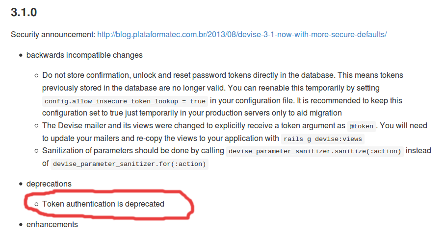

REST APIs in the context of single-page applications
August 25th 2014

About me
CTO of Hstry
Organizer of Belgium Ember.js meetups
A bit of background
Hstry application has a Ruby on Rails REST API and an Ember.js front-end
Server-client communication is all JSON
API is not public: just one front-end
Today I'm talking about
- What is REST?
- Authentication
- Authorization
- HTTP status codes
- JSON API
What is REST?
Architecture for the World Wide Web
Separation of client and server
Stateless
Unique identification of resources through URIs
http://www.example.com/posts/15
Standard HTTP methods
GETPOSTPUTDELETE(PATCH)
Authentication
Implies some form of state
REST is stateless so stored on client
Token-based authentication
- At login, generate token on server
- Return token in response
- Client includes token with every request
Where to store token?
In memory
- Single-page application so no refreshes
- Does not persist when user closes and opens tab
Cookies
- Automatically sent with every request
- Also sends other stored information
- Stores text, not objects
- Not very RESTful
sessionStorage and localStorage
- Part of Web Storage specification
- Secure, per-domain storage
- Stores Javascript objects, not text
- Stays on client
- Send token through query parameter
- Browser support is good (caniuse.com)
All of this requires HTTPS!
Implementation in Devise, unfortunately...
Implementation vulnerable to timing attacks
Maintainer provided secure implementation, not yet merged in Devise (see here)
Authorization
Deals with permissions
Is User X allowed to perform Action Y?
Comes after authentication
Need context-aware DSL that is expressive enough
ALLOWED User with id 15 requests PUT /api/user/15/profile
FORBIDDEN User with id 16 requests PUT /api/user/15/profile
Define roles
e.g. admin, editor, user
Specify permissions for each role.
declarative_authorization gem
role :guest do
...
end
role :student do
# Include all permissions from guest
includes :guest
has_permission_on :timelines, to: :show do
# Can only see timelines that are made by himself
if_attribute :type => is { "UserTimeline" },
:author => is { user }
end
end
HTTP status codes
Adds semantics to HTTP responses
Both for success (2xx) and error (4xx)
REST verbs
GET200 OKPOST201 CreatedPUT204 No content (200 OK if include response)DELETE204 No content
Error codes
- Wrong authentication 401 Unauthorized
- Wrong authorization 403 Forbidden
- Parameter is missing 412 Precondition failed
- Other error 422 Unprocessable entity
Nice overview on http://en.wikipedia.org/wiki/List_of_HTTP_status_codes
JSON API
Initiative by Steve Klabnik and Yehuda Katz
Standard for representation of JSON responses
Belief that shared conventions increase productivity through generalized tooling
Specifies...
...how resources are represented in JSON
{
"links": {
"posts.author": {
"href": "http://example.com/people/{posts.author}",
"type": "people"
},
"posts.comments": {
"href": "http://example.com/comments/{posts.comments}",
"type": "comments"
}
},
"posts": [{
"id": "1",
"title": "Rails is Omakase",
"links": {
"author": "9",
"comments": [ "5", "12", "17", "20" ]
}
}]
}
...HTTP status codes and Location header
When one or more resources has been created, the server MUST return a 201 Created status code.
The response MUST include a Location header identifying the location of all resources created by the request.
...structure for errors
{
"errors": [{
"id": "forbidden",
"href": "http://help.example.com/authorization_error",
"status": "403",
"code": "ERROR_12345",
"title": "Authorization error",
"detail": "The requesting user does not have the permissions to perform this action"
}]
}
...structure for PATCH
PATCH /posts/1
Content-Type: application/json-patch+json
[
{ "op": "replace", "path": "/title", "value": "A new title" }
]
Replace attribute title of resource /posts/1 with value A new title
Implementations
- Ruby ActiveModel::Serializers (0.9.0 released last Friday)
- Javascript Ember Data
- ... other languages too
Thank you